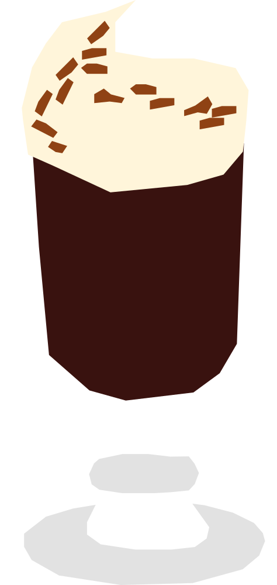

¿Qué pasa en los aeropuertos?
Creado en 1943 por el chef Joe Sheridan en el aeropuerto de Foynes, para calentar a un grupo de pasajeros cuyo vuelo hacia Nueva York había sido cancelado por mal clima. Cruzó el Atlántico en los años 50 gracias a un periodista de viajes.
RECETA
- 40 ml whisky irlandés
- 120 ml café caliente
- 10 ml jarabe simple
- 30 ml crema batida
- Nuez moscada (opcional)
- Para preparar el jarabe simple, mezcla partes iguales de azúcar y agua caliente hasta que el azúcar se disuelva. Deja enfriar antes de usar.
- Agrega el whisky, café caliente y jarabe simple en un vaso resistente al calor.
- Mezcla hasta integrar.
- Coloca suavemente la crema batida sobre la superficie para que quede flotando.
- Agrega una pizca de nuez moscada sobre la crema (opcional).
Vaso: Vaso de irish coffee (con base)